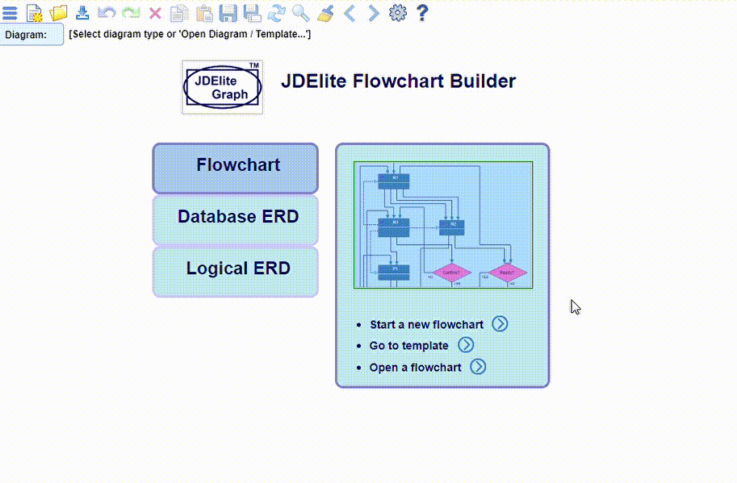
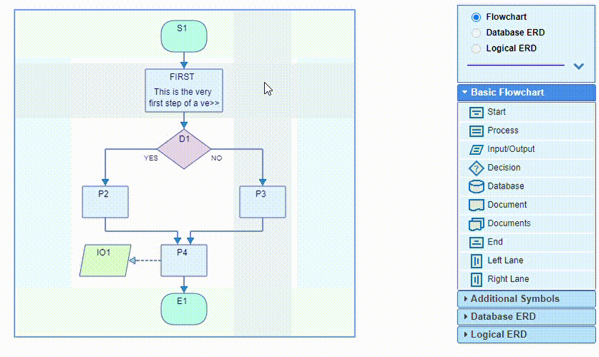
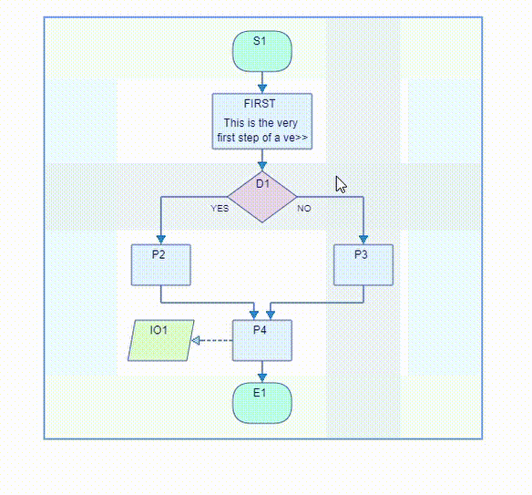

The layout structure of the canvas is the same for the two supported diagram types.
The nodes are positioned on a rectangular dynamic grid that consists of
layers across the flow direction and
lanes along the flow direction.
Flowchart diagrams are displayed either vertically or horizontaly. In vertical mode the leftmost
lane is accepting only left/top nodes, and the rightmost only right/bottom nodes.
Switching to horizontal mode, the leftmost lane shows at the top, and the rightmost lahe shows
at the bottom. These lanes are dedicated as swim lanes. They can be added or removed
from the Settings->General dialog.
The switching of the flow direction is from the large arrow button located in the top
right section above the component palette. This section can be expanded or collapsed.
Database ERDs use always vertical flow direction and do not expose any swim lanes.
Nodes are allocated in the cells at the
intersections. The connection links are traced along the pipes between the
layers and between the lanes. These areas are often highlighted when the mouse is moved over.
When a node icon is dragged from the palette to the canvas, or when a node is moved to a different
position, only the cells accepting the particular node type are highlighted.

Nodes are assigned names at node creation time. Names have to be unique across the diagram. They can be changed inline any time later. Duplicate names are rejected. Nodes are created either by dragging a node icon from the palette, or by selecting a node item from the context menu on the canvas. The selection options are context sensitive:

Layers and/or lanes can be added from the canvas context menu when the mouse is positioned on a pipe. Empty layers or lanes can be removed from the context menu:
